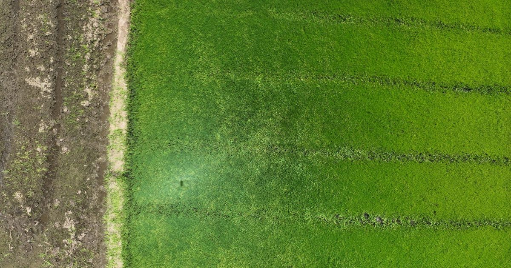

Presentación de la charla sobre el proyecto FONDOCYT-UASD que usa drones multiespectrales e inteligencia artificial para detectar enfermedades foliares en arroz y musáceas, y sobre la matemática que hay dentro de esa «caja negra».
Impartida en el marco del 488.º aniversario de la UASD, recorre el trabajo de campo en Mao, Valverde, y explica paso a paso cómo una red convolucional reconoce una imagen.
🎞️ Enlace de la presentación
www.matuasd.com/pages/blog/presentacion-drones-ia/
Ver la presentaciónUsa las flechas para avanzar y F para pantalla completa.